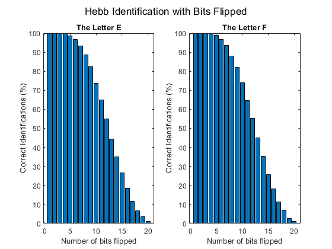

clf reset; clearvars; clc; close all;
format short
rng('shuffle')
num = randi(randi(100));
for i = 1:num
rng('shuffle')
end
maxw = 10;
minw = 0;
Pe = [
1 1 1 1 1, ...
1 -1 -1 -1 -1, ...
1 1 1 1 -1, ...
1 -1 -1 -1 -1, ...
1 1 1 1 1
]';
Pf = [
1 1 1 -1 -1, ...
1 -1 -1 -1 -1, ...
1 1 1 -1 -1, ...
1 -1 -1 -1 -1, ...
1 -1 -1 -1 -1 ...
]';
P = cat(2, Pe, Pf);
T = [1 -1];
[R, ~] = size(P);
[S, Q] = size(T);
W0 = zeros(S, R);
B0 = ones(S, 1);
disp_freq = 1;
max_epoch = 1;
lr = 1;
lp.lr = lr;
lp.dr = 0;
W = W0;
B = B0;
for epoch = 1:max_epoch
for q = 1:Q
A = T(:, q);
dW = learnhd(W, P(:,q), [], [], A, [], [], [], [], [], lp, []);
W = W +dW;
end
end
numBits = 20;
iterations = 10000;
identifiedE = [iterations, numBits];
identifiedF = [iterations, numBits];
for j = 1:numBits
for i = 1:iterations
testE = makeNoisy(Pe, j);
resultE = hardlims(W*testE);
if resultE > 0
identifiedE(i, j) = 1;
else
identifiedE(i, j) = 0;
end
testF = makeNoisy(Pf, j);
resultF = hardlims(W*testF);
if resultF < 0
identifiedF(i, j) = 1;
else
identifiedF(i, j) = 0;
end
end
end
identifiedE = sum(identifiedE)./(iterations/100);
identifiedF = sum(identifiedF)./(iterations/100);
figure;
subplot(1,2,1);
bar(1:numBits, identifiedE);
title('The Letter E')
xlabel('Number of bits flipped')
ylabel('Correct Identifications (%)')
subplot(1,2,2)
bar(1:numBits, identifiedF);
title('The Letter F')
xlabel('Number of bits flipped')
ylabel('Correct Identifications (%)')
sgtitle('Hebb Identification with Bits Flipped')
figure;
for i = 1:4
for j = 1:5
num = (5*(i-1))+j;
subplot(4, 5, num);
example = makeNoisy(Pe, num);
example = reshape(example, [5,5])';
hintonw(example);
title([num2str(num), ' bit(s) flipped'])
end
end
sgtitle('E with bits flipped')
figure;
for i = 1:4
for j = 1:5
num = j+(5*(i-1));
subplot(4, 5, num);
example = reshape(makeNoisy(Pf, num), [5,5])';
hintonw(example);
title([num2str(num), ' bit(s) flipped'])
end
end
sgtitle('F with bits flipped');
fprintf('\n\nFor the letter "E":\n\n\n')
for i = 1:numBits
fprintf('Identified %1g percent of inputs with %d bit(s) flipped.\n', identifiedE(i), i);
end
fprintf('\n\nFor the letter "F":\n\n\n')
for i = 1:numBits
fprintf('Identified %1g percent of inputs with %d bit(s) flipped.\n', identifiedF(i), i);
end
identifiedE2 = [iterations, numBits];
identifiedF2 = [iterations, numBits];
for j = 1:numBits
for i = 1:iterations
testE = makeNoisy2(Pe, j);
resultE = hardlims(W*testE);
if resultE > 0
identifiedE2(i, j) = 1;
else
identifiedE2(i, j) = 0;
end
testF = makeNoisy2(Pf, j);
resultF = hardlims(W*testF);
if resultF < 0
identifiedF2(i, j) = 1;
else
identifiedF2(i, j) = 0;
end
end
end
identifiedE2 = sum(identifiedE2)./(iterations/100);
identifiedF2 = sum(identifiedF2)./(iterations/100);
figure;
subplot(1,2,1);
bar(1:numBits, identifiedE2);
title('The Letter E')
xlabel('Number of bits missing')
ylabel('Correct Identifications (%)')
subplot(1,2,2)
bar(1:numBits, identifiedF2);
title('The Letter F')
xlabel('Number of bits missing')
ylabel('Correct Identifications (%)')
sgtitle('Hebb Identification with Bits Missing')
figure;
for i = 1:4
for j = 1:5
num = j+(5*(i-1));
subplot(4, 5, num);
example = reshape(makeNoisy2(Pf, num), [5,5])';
hintonw(example);
title([num2str(num), ' bit(s) missing'])
end
end
sgtitle('F with bits missing')
figure;
for i = 1:4
for j = 1:5
num = j+(5*(i-1));
subplot(4, 5, num);
example = reshape(makeNoisy2(Pe, num), [5,5])';
hintonw(example);
title([num2str(num), ' bit(s) missing'])
end
end
sgtitle('E with bits missing')
fprintf('\n\nFor the letter "E":\n\n\n')
for i = 1:numBits
fprintf('Identified %1g percent of inputs with %d bit(s) missing.\n', identifiedE2(i), i);
end
fprintf('\n\nFor the letter "F":\n\n\n')
for i = 1:numBits
fprintf('Identified %1g percent of inputs with %d bit(s) missing.\n', identifiedF2(i), i);
end
function retArr = makeNoisy(passArr, numBits)
diffEl = 0;
retArr = passArr;
while(diffEl ~= numBits)
row = randi(25);
retArr(row, 1) = -1*(passArr(row, 1));
diffEl = sum(sum(retArr ~= passArr));
end
end
function retArr = makeNoisy2(passArr, numBits)
diffEl = 0;
retArr = passArr;
while(diffEl ~= numBits)
row = randi(25);
if passArr(row, 1) == 0
retArr(row, 1) = 1;
else
retArr(row, 1) = 0;
end
diffEl = sum(sum(retArr ~= passArr));
end
end
For the letter "E":
Identified 100 percent of inputs with 1 bit(s) flipped.
Identified 100 percent of inputs with 2 bit(s) flipped.
Identified 100 percent of inputs with 3 bit(s) flipped.
Identified 99.74 percent of inputs with 4 bit(s) flipped.
Identified 98.64 percent of inputs with 5 bit(s) flipped.
Identified 96.64 percent of inputs with 6 bit(s) flipped.
Identified 93.16 percent of inputs with 7 bit(s) flipped.
Identified 88.49 percent of inputs with 8 bit(s) flipped.
Identified 82.27 percent of inputs with 9 bit(s) flipped.
Identified 73.73 percent of inputs with 10 bit(s) flipped.
Identified 65.05 percent of inputs with 11 bit(s) flipped.
Identified 54.85 percent of inputs with 12 bit(s) flipped.
Identified 44.38 percent of inputs with 13 bit(s) flipped.
Identified 34.95 percent of inputs with 14 bit(s) flipped.
Identified 26.72 percent of inputs with 15 bit(s) flipped.
Identified 18.6 percent of inputs with 16 bit(s) flipped.
Identified 11.58 percent of inputs with 17 bit(s) flipped.
Identified 6.66 percent of inputs with 18 bit(s) flipped.
Identified 3.46 percent of inputs with 19 bit(s) flipped.
Identified 1.1 percent of inputs with 20 bit(s) flipped.
For the letter "F":
Identified 100 percent of inputs with 1 bit(s) flipped.
Identified 100 percent of inputs with 2 bit(s) flipped.
Identified 100 percent of inputs with 3 bit(s) flipped.
Identified 99.75 percent of inputs with 4 bit(s) flipped.
Identified 98.97 percent of inputs with 5 bit(s) flipped.
Identified 96.77 percent of inputs with 6 bit(s) flipped.
Identified 93.67 percent of inputs with 7 bit(s) flipped.
Identified 88.11 percent of inputs with 8 bit(s) flipped.
Identified 82 percent of inputs with 9 bit(s) flipped.
Identified 73.85 percent of inputs with 10 bit(s) flipped.
Identified 64.74 percent of inputs with 11 bit(s) flipped.
Identified 55.32 percent of inputs with 12 bit(s) flipped.
Identified 44.96 percent of inputs with 13 bit(s) flipped.
Identified 35.4 percent of inputs with 14 bit(s) flipped.
Identified 25.55 percent of inputs with 15 bit(s) flipped.
Identified 18.26 percent of inputs with 16 bit(s) flipped.
Identified 11.32 percent of inputs with 17 bit(s) flipped.
Identified 6.98 percent of inputs with 18 bit(s) flipped.
Identified 2.78 percent of inputs with 19 bit(s) flipped.
Identified 1.22 percent of inputs with 20 bit(s) flipped.
For the letter "E":
Identified 100 percent of inputs with 1 bit(s) missing.
Identified 100 percent of inputs with 2 bit(s) missing.
Identified 100 percent of inputs with 3 bit(s) missing.
Identified 100 percent of inputs with 4 bit(s) missing.
Identified 100 percent of inputs with 5 bit(s) missing.
Identified 100 percent of inputs with 6 bit(s) missing.
Identified 100 percent of inputs with 7 bit(s) missing.
Identified 100 percent of inputs with 8 bit(s) missing.
Identified 100 percent of inputs with 9 bit(s) missing.
Identified 100 percent of inputs with 10 bit(s) missing.
Identified 100 percent of inputs with 11 bit(s) missing.
Identified 100 percent of inputs with 12 bit(s) missing.
Identified 100 percent of inputs with 13 bit(s) missing.
Identified 100 percent of inputs with 14 bit(s) missing.
Identified 100 percent of inputs with 15 bit(s) missing.
Identified 100 percent of inputs with 16 bit(s) missing.
Identified 100 percent of inputs with 17 bit(s) missing.
Identified 100 percent of inputs with 18 bit(s) missing.
Identified 100 percent of inputs with 19 bit(s) missing.
Identified 100 percent of inputs with 20 bit(s) missing.
For the letter "F":
Identified 100 percent of inputs with 1 bit(s) missing.
Identified 100 percent of inputs with 2 bit(s) missing.
Identified 100 percent of inputs with 3 bit(s) missing.
Identified 100 percent of inputs with 4 bit(s) missing.
Identified 100 percent of inputs with 5 bit(s) missing.
Identified 100 percent of inputs with 6 bit(s) missing.
Identified 100 percent of inputs with 7 bit(s) missing.
Identified 99.98 percent of inputs with 8 bit(s) missing.
Identified 99.99 percent of inputs with 9 bit(s) missing.
Identified 100 percent of inputs with 10 bit(s) missing.
Identified 99.92 percent of inputs with 11 bit(s) missing.
Identified 99.79 percent of inputs with 12 bit(s) missing.
Identified 99.68 percent of inputs with 13 bit(s) missing.
Identified 99.09 percent of inputs with 14 bit(s) missing.
Identified 98.61 percent of inputs with 15 bit(s) missing.
Identified 97.75 percent of inputs with 16 bit(s) missing.
Identified 96.05 percent of inputs with 17 bit(s) missing.
Identified 93.62 percent of inputs with 18 bit(s) missing.
Identified 89.81 percent of inputs with 19 bit(s) missing.
Identified 83.77 percent of inputs with 20 bit(s) missing.
